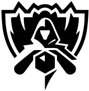
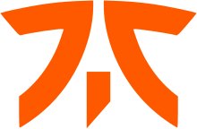

Champions Of World
League of Legends World Championship

The League of Legends World Championship (commonly abbreviated as Worlds) is the annual professional League of Legends world championship tournament hosted by Riot Games and is the culmination of each season. Teams compete for the champion title, the 70-pound (32-kilogram) Summoner's Cup, and a multi-million-dollar championship prize. In 2018, the final was watched by 99.6 million people, breaking 2017's final's viewer record. The tournament has been praised for its ceremonial performances, while receiving attention worldwide due to its dramatic and emotional nature.
The League of Legends World Championships has gained tremendous success and popularity, making it among the world's most prestigious and watched tournaments, as well as the most watched video game in the world. Due to its success, esports scenes became prominent and widely seen as a potential Olympics event, already being included as a medal event in 2022 Asian Games.
The tournament rotates its venues across different major countries and regions each year. South Korea's T1 is the most successful team in the tournament's history, having won three world championships.
Season 1 Champion
Fnatic
 Fnatic's League of Legends team won the first-ever League of Legends World Championship in 2011, and also held the record for the most League of Legends Championship Series split titles in the LEC—totalling seven of the sixteen played so far (as of September 2020)—until G2 Esports won their eighth title in the 2020 LEC Summer Split. With the 2015 EU LCS Summer Split they became the first LCS team to finish a split undefeated.
Season 2 Champion
Taipei Assassins
 Taipei Assassins, or TPA, was a competitive League of Legends team based in Taiwan. After their victory at the Season 2 World Championship, TPA was hailed as one of the strongest teams worldwide. Taipei Assassins is the sister team of Taipei Snipers.
Taipei Assassins, or TPA, was a competitive League of Legends team based in Taiwan. After their victory at the Season 2 World Championship, TPA was hailed as one of the strongest teams worldwide. Taipei Assassins is the sister team of Taipei Snipers.
TPA's 3-1 win over Frost not only gave them the world championship and the million-dollar grand prize, but also the honour of being the first team to have their names engraved on the Summoner's Cup (which had not been introduced the previous year, when Fnatic had become the very first League world champion.) Their win was also celebrated not only as Taiwan's greatest moment in competitive League of Legends but as the country's greatest moment in any e-Sport.

Season 3 Champion
SK Telecom T1
 In December 2012, SK Telecom acquired the roster of Eat Sleep Game, with a roster consisting of Reapered, H0R0, MighTiLy, UandME, and StarLast. See the history of that team at SK Telecom T1 S (originally SK Telecom T1, then SK Telecom T1 #1). In February 2013, the organization created a new roster, which consisted of Faker, bengi, Piglet, PoohManDu, and Impact. See the history of that team at SK Telecom T1 K (originally SK Telecom T1 #2).
In December 2012, SK Telecom acquired the roster of Eat Sleep Game, with a roster consisting of Reapered, H0R0, MighTiLy, UandME, and StarLast. See the history of that team at SK Telecom T1 S (originally SK Telecom T1, then SK Telecom T1 #1). In February 2013, the organization created a new roster, which consisted of Faker, bengi, Piglet, PoohManDu, and Impact. See the history of that team at SK Telecom T1 K (originally SK Telecom T1 #2).
On November 12, the sister teams were renamed from #1 and #2 to S and K, respectively. Though it was initially known as SK Telecom's secondary team, K outperformed S, winning the Season 3 World Championship. Upon their return to Korea, SKT T1 K became the only team to have a perfect season (not losing a single game) in Champions Winter 2013-2014.

Season 4 Champion
Samsung White
 Going into the 2014 Season World Championship, White and Blue were the two favorites to win the tournament. White went undefeated in their group, beating EDward Gaming, ahq e-Sports Club, and Dark Passage all 2-0 in the double round-robin.
Going into the 2014 Season World Championship, White and Blue were the two favorites to win the tournament. White went undefeated in their group, beating EDward Gaming, ahq e-Sports Club, and Dark Passage all 2-0 in the double round-robin.
In the bracket stage, they beat Team Solomid 3-1 in the quarterfinals, then their sister team Samsung Blue 3-0 in the semifinals, and then won the finals 3-1 against Star Horn Royal Club. Only dropping two games the entire tournament, White were crowned World Champions and won the $1,000,000 prize.